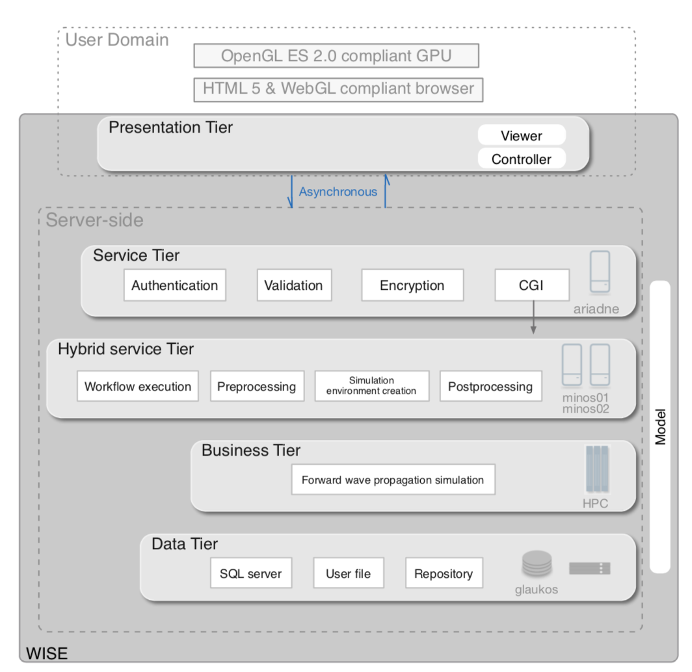

Performing numerical simulation of 3D seismic wave propagation is important for earthquake studies. However, developing the numerical schemes for solving the partial differential equations is not the only difficult part. Before and after submitting a job at HPC to run the nuemrcical code, the data acquisition, preprocessing, mesh generation, visualization etc, relies on various tools and operations, which potentially formed an invisible obstacle for the researchers to carry out the simulation for studying realistic earthquakes. There is a EU funded research project worked by 3-4 universities aims at solving this issue (there might be another similar but earlier project from Caltech), but to my best knowdledge, it seems a lot user degrees of freedom (DOF) are compromised, such as the study areas are limited. In this blog, I would like to briefly introduce an integrated web and HPC based 3D seismic wave propagation simulation environment that I design and implemented. The overall architecture is illustrated below.



Researcher / content creator: Cong Luo. Copyright reserved.